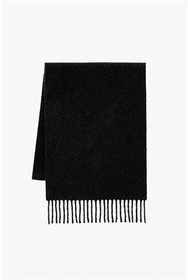
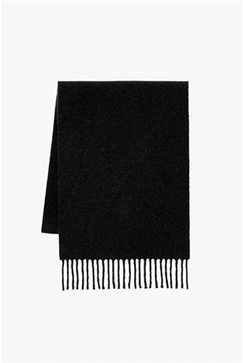
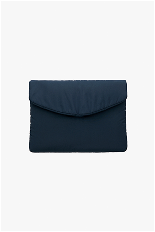
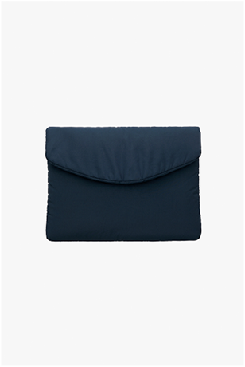
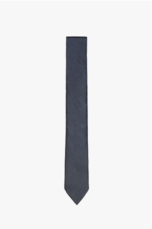
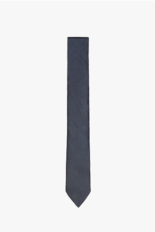
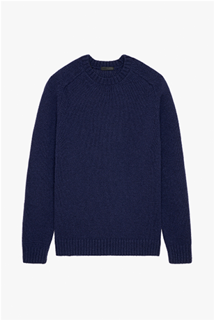
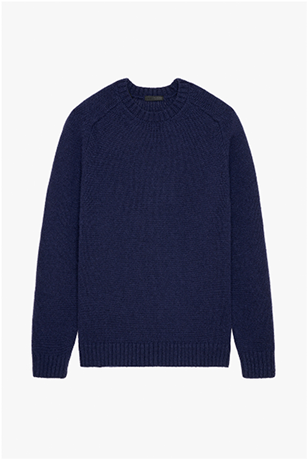

When Zara Origins launched its first two collections for the winter and summer seasons, the evolving project was defined by this statement.
After two editions allowing for experimentation within the collection, the approach for the third edition has evolved naturally, solidifying Zara Origins as a yearlong offering of wardrobe essentials supplemented with limited-edition seasonal pieces.


 

 


 


 
